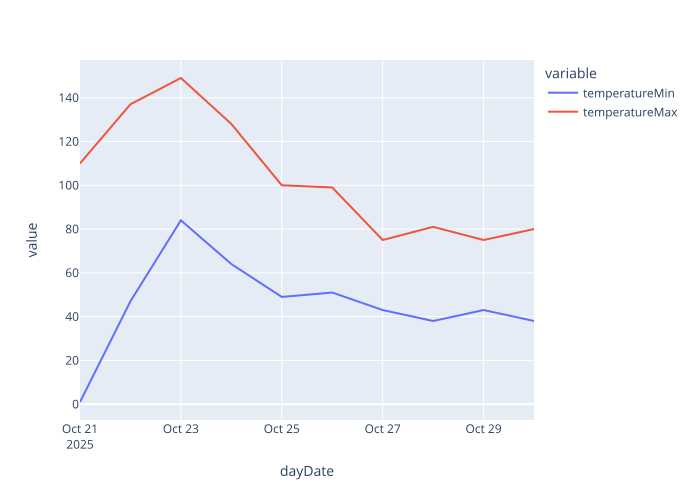

Modularization#

Write programs that do one thing and do it well.
— Doug McIlroy
Slides/PDF#
Split code into files, modules, and packages#
Large programs often contain dozens of classes with hundreds of functions and many thousands of lines of code. It quickly becomes difficult to keep an overview when all classes are defined in a single file. Especially when different programmers work at different places in the program, version conflicts can arise very quickly when people work on similar files.
To keep this organized and easy to navigate, code is split into multiple files with the extension .py. It is common to have one file
per class, when classes are defined
per topic, when helper functions are defined (e.g., mathematical functions, …)
per area of responsibility, when (for example) data loading is separated from its processing. This way you can later define other processing steps and reuse the loading.
If we save each class of the geometry elements from the Class Definition section of the last lecture, we would then have, for example, a project structure corresponding to:
Each file contains only the code of the class with the same name, even if that is only a few lines, as in the case of the classes Triangle, Tetragon, and Pentagon. Crucially, when a programmer searches for the code of a class, they should be able to see exactly in which file it can be found and not have to search far.
Larger projects are split into multiple modules by creating additional subdirectories. For example, we want to group all generic classes for points in the points directory and all geometric shapes in the shapes directory. This makes it easy to structure larger projects.
The sum of all modules then forms a package. In this case the geometry package, which we can reuse in different implementations.
📁 geometry
📁 points
📁 shapes
📄 Line.py
main() - The entry point of a program#
When code is spread across multiple files, Python needs a hint about which code should be executed. For this, you define the special entry function main().
It exists in almost all programming languages and always designates the starting point of a program.
In Python, it either takes no arguments or receives them dynamically when it is invoked by the user or by another program (a.k.a. command-line arguments).
def main():
print("This is the main function")
However, you want to avoid the function main() from being called when the Python file is, for example, imported as a library, where you’re only interested in the functions. Therefore, at the end of a file that defines a main() function you use the following conditional.
if __name__ == "__main__":
main()
This is the main function
She takes advantage of the fact that the value of the special variable __name__ in the main file is always '__main__', whereas in an imported file it indicates the name of the main file.
Importing Modules#
To avoid constantly loading unnecessary code, Python does not load this code automatically.
So, if we want to use the code in our files, modules, and packages, we must first tell Python to load it.
This importing is done with the import command.
A simple import is importing an entire package.
This is done by writing import followed by the package name.
import geometry.points.ImmutablePoint
import geometry.shapes.Line
def main():
point_1 = geometry.points.ImmutablePoint.ImmutablePoint(x=54.083336, y=12.108811)
point_2 = geometry.points.ImmutablePoint.ImmutablePoint(y=12.094167, x=54.075211)
line_1 = geometry.shapes.Line.Line(start=point_1, end=point_2)
print(f"Die Länge der Linie zwischen Punkt 1 und 2 ist: {line_1.length()}")
if __name__ == "__main__":
main()
Die Länge der Linie zwischen Punkt 1 und 2 ist: 0.016747010509340444
One drawback of importing entire packages is that if we want to reference individual classes that reside in submodules, we must specify the fully qualified class name. For example, in the example above: geometry.points.ImmutablePoint.ImmutablePoint.
Therefore, one typically imports individual modules by specifying the path to a module, for example geometry.points.ImmutablePoint.ImmutablePoint. Here, you can also assign new names to the imported modules, such as point or line, in the example below.
import geometry.points.ImmutablePoint as point
import geometry.shapes.Line as line
def main():
point_1 = point.ImmutablePoint(x=54.083336, y=12.108811)
point_2 = point.ImmutablePoint(y=12.094167, x=54.075211)
line_1 = line.Line(start=point_1, end=point_2)
print(f"Die Länge der Linie zwischen Punkt 1 und 2 ist: {line_1.length()}")
if __name__ == "__main__":
main()
Die Länge der Linie zwischen Punkt 1 und 2 ist: 0.016747010509340444
Alternatively, parts of a module can also be imported using the wildcard * and the from statement. All elements are imported with the wildcard *. Specific elements, such as individual classes, can also be specified directly, as in the following example Line.
from geometry.points.ImmutablePoint import *
from geometry.shapes.Line import Line
def main():
point_1 = ImmutablePoint(x=54.083336, y=12.108811)
point_2 = ImmutablePoint(y=12.094167, x=54.075211)
line_1 = Line(start=point_1, end=point_2)
print(f"Die Länge der Linie zwischen Punkt 1 und 2 ist: {line_1.length()}")
if __name__ == "__main__":
main()
Die Länge der Linie zwischen Punkt 1 und 2 ist: 0.016747010509340444
Import standard packages from Python#
Python includes many standard libraries for common tasks. For construction and environmental informatics, the following are the most useful:
packet |
description |
|---|---|
collections |
More complex data types for counting, sorting |
http |
Functions of the HTTP protocol, such as web servers |
json |
Functions to store objects as text |
logging |
Functions to write logs |
math |
Mathematical functions |
os |
Functions to locate, load, and save files |
pickle |
Functions to store objects in binary form |
pprint |
print functions for pretty-printing objects |
random |
Functions for generating random numbers |
re |
Functions for regular expressions to search text |
sys |
Functions to obtain system information |
time |
Functions for time and date information |
timeit |
Functions to measure the performance of functions |
traceback |
Functions to display the stack trace |
urllib |
Functions to load and process URLs on the Internet |
From the list, we have already become familiar with and used the libraries math, time, timeit, traceback, and logging. The other packages, however, offer additional useful functions.
For example, if we want to list all files in a directory, we use the os package.
import os
folder = "geometry/shapes/"
for count, filename in enumerate(os.listdir(folder)):
if os.path.isfile(os.path.join(folder, filename)):
path = os.path.join(folder, filename)
print(path)
geometry/shapes/Tetragon.py
geometry/shapes/Pentagon.py
geometry/shapes/Line.py
geometry/shapes/Polygon.py
geometry/shapes/Triangle.py
Many websites offer application programming interfaces, so-called APIs, because these APIs are also used by their own websites to load data that is displayed on the page. The APIs usually use the JSON format to exchange data. This is a text-based file format that in Python closely resembles the dict data type, but it also supports all other primitive and composite data types in Python.
We would like, for example, to analyze the weather data of a weather station in Germany. We obtain these data from the German Weather Service. These data can also be downloaded from the API. For this, you need the ID (identification number) of a weather station, which can be found here. We take as an example a station in the Hansaviertel in Rostock with the ID 12495.
Then you can load the weather data with Python with the help of the urllib package from the API. The JSON format can be processed with the json package. To output this in a nicer way, we use the pprint function from the pprint package (pretty-print).
import urllib.request
import json
import pprint
stationID='12495' # Rostock-Hansaviertel
with urllib.request.urlopen(f'https://dwd.api.proxy.bund.dev/v30/stationOverviewExtended?stationIds={stationID}') as f:
data=f.read() # This returns binary data
weather=json.loads(data) # We convert the binary data into a dict
pprint.pprint(weather, indent=2, compact=True)
{ '12495': { 'days': [ { 'dayDate': '2025-10-21',
'icon': 1,
'icon1': None,
'icon2': None,
'moonPhase': 7,
'moonrise': 1761022902000,
'moonriseOnThisDay': 1761022902000,
'moonset': 1761058702000,
'moonsetOnThisDay': 1761058702000,
'precipitation': 0,
'stationId': None,
'sunrise': 1761023060000,
'sunriseOnThisDay': 1761023060000,
'sunset': 1761060305000,
'sunsetOnThisDay': 1761060305000,
'sunshine': 32767,
'temperatureMax': 110,
'temperatureMin': 1,
'windDirection': 1610,
'windGust': 389,
'windSpeed': 167},
{ 'dayDate': '2025-10-22',
'icon': 3,
'icon1': None,
'icon2': None,
'moonPhase': 0,
'moonrise': 1761113663000,
'moonriseOnThisDay': 1761113663000,
'moonset': 1761145971000,
'moonsetOnThisDay': 1761145971000,
'precipitation': 0,
'stationId': None,
'sunrise': 1761109563000,
'sunriseOnThisDay': 1761109563000,
'sunset': 1761146584000,
'sunsetOnThisDay': 1761146584000,
'sunshine': 32767,
'temperatureMax': 137,
'temperatureMin': 47,
'windDirection': 1720,
'windGust': 278,
'windSpeed': 111},
{ 'dayDate': '2025-10-23',
'icon': 3,
'icon1': None,
'icon2': None,
'moonPhase': 0,
'moonrise': 1761204468000,
'moonriseOnThisDay': 1761204468000,
'moonset': 1761233497000,
'moonsetOnThisDay': 1761233497000,
'precipitation': 1,
'stationId': None,
'sunrise': 1761196067000,
'sunriseOnThisDay': 1761196067000,
'sunset': 1761232864000,
'sunsetOnThisDay': 1761232864000,
'sunshine': 32767,
'temperatureMax': 149,
'temperatureMin': 84,
'windDirection': 1720,
'windGust': 389,
'windSpeed': 148},
{ 'dayDate': '2025-10-24',
'icon': 18,
'icon1': None,
'icon2': None,
'moonPhase': 0,
'moonrise': 1761295211000,
'moonriseOnThisDay': 1761295211000,
'moonset': 1761321411000,
'moonsetOnThisDay': 1761321411000,
'precipitation': 67,
'stationId': None,
'sunrise': 1761282571000,
'sunriseOnThisDay': 1761282571000,
'sunset': 1761319145000,
'sunsetOnThisDay': 1761319145000,
'sunshine': 32767,
'temperatureMax': 128,
'temperatureMin': 64,
'windDirection': 2640,
'windGust': 370,
'windSpeed': 130},
{ 'dayDate': '2025-10-25',
'icon': 3,
'icon1': None,
'icon2': None,
'moonPhase': 0,
'moonrise': 1761385682000,
'moonriseOnThisDay': 1761385682000,
'moonset': 1761409931000,
'moonsetOnThisDay': 1761409931000,
'precipitation': 0,
'stationId': None,
'sunrise': 1761369075000,
'sunriseOnThisDay': 1761369075000,
'sunset': 1761405428000,
'sunsetOnThisDay': 1761405428000,
'sunshine': 32767,
'temperatureMax': 100,
'temperatureMin': 49,
'windDirection': 2410,
'windGust': 426,
'windSpeed': 167},
{ 'dayDate': '2025-10-26',
'icon': 7,
'icon1': None,
'icon2': None,
'moonPhase': 1,
'moonrise': 1761475617000,
'moonriseOnThisDay': 1761475617000,
'moonset': 1761499198000,
'moonsetOnThisDay': 1761499198000,
'precipitation': 10,
'stationId': None,
'sunrise': 1761455579000,
'sunriseOnThisDay': 1761455579000,
'sunset': 1761491711000,
'sunsetOnThisDay': 1761491711000,
'sunshine': 32767,
'temperatureMax': 99,
'temperatureMin': 51,
'windDirection': 2450,
'windGust': 408,
'windSpeed': 167},
{ 'dayDate': '2025-10-27',
'icon': 7,
'icon1': None,
'icon2': None,
'moonPhase': 1,
'moonrise': 1761564826000,
'moonriseOnThisDay': 1761564826000,
'moonset': 1761589256000,
'moonsetOnThisDay': 1761589256000,
'precipitation': 11,
'stationId': None,
'sunrise': 1761542084000,
'sunriseOnThisDay': 1761542084000,
'sunset': 1761577996000,
'sunsetOnThisDay': 1761577996000,
'sunshine': 32767,
'temperatureMax': 75,
'temperatureMin': 43,
'windDirection': 2550,
'windGust': 370,
'windSpeed': 167},
{ 'dayDate': '2025-10-28',
'icon': 18,
'icon1': None,
'icon2': None,
'moonPhase': 1,
'moonrise': 1761653309000,
'moonriseOnThisDay': 1761653309000,
'moonset': 1761679940000,
'moonsetOnThisDay': 1761679940000,
'precipitation': 54,
'stationId': None,
'sunrise': 1761628589000,
'sunriseOnThisDay': 1761628589000,
'sunset': 1761664282000,
'sunsetOnThisDay': 1761664282000,
'sunshine': 32767,
'temperatureMax': 81,
'temperatureMin': 38,
'windDirection': 2530,
'windGust': 389,
'windSpeed': 185},
{ 'dayDate': '2025-10-29',
'icon': 7,
'icon1': None,
'icon2': None,
'moonPhase': 1,
'moonrise': 1761741247000,
'moonriseOnThisDay': 1761741247000,
'moonset': 1761770985000,
'moonsetOnThisDay': 1761770985000,
'precipitation': 33,
'stationId': None,
'sunrise': 1761715094000,
'sunriseOnThisDay': 1761715094000,
'sunset': 1761750569000,
'sunsetOnThisDay': 1761750569000,
'sunshine': 0,
'temperatureMax': 75,
'temperatureMin': 43,
'windDirection': 2700,
'windGust': 296,
'windSpeed': 130},
{ 'dayDate': '2025-10-30',
'icon': 3,
'icon1': None,
'icon2': None,
'moonPhase': 2,
'moonrise': 1761828795000,
'moonriseOnThisDay': 1761828795000,
'moonset': 1761862200000,
'moonsetOnThisDay': 1761862200000,
'precipitation': 2,
'stationId': None,
'sunrise': 1761801599000,
'sunriseOnThisDay': 1761801599000,
'sunset': 1761836858000,
'sunsetOnThisDay': 1761836858000,
'sunshine': 32767,
'temperatureMax': 80,
'temperatureMin': 38,
'windDirection': 2570,
'windGust': 352,
'windSpeed': 148}],
'forecast1': { 'cloudCoverTotal': [],
'dewPoint2m': [ -3, 4, 9, 12, 15, 18, 23, 25, 27,
27, 27, 25, 26, 25, 24, 26, 27, 27,
27, 27, 27, 30, 33, 36, 43, 50, 58,
64, 66, 69, 70, 72, 69, 67, 65, 62,
62, 61, 60, 60, 61, 63, 61, 61, 65,
65, 67, 70, 74, 79, 85, 89, 94, 98,
100, 99, 101, 95, 94, 92, 90, 88,
89, 88],
'humidity': [ 778, 702, 634, 581, 551, 534, 550,
573, 613, 660, 701, 730, 756, 777,
799, 821, 839, 857, 857, 857, 869,
887, 894, 864, 835, 786, 732, 695,
651, 643, 639, 674, 701, 748, 768,
778, 793, 793, 804, 809, 826, 837,
843, 854, 872, 843, 849, 855, 833,
796, 761, 737, 719, 720, 725, 734,
779, 783, 809, 819, 808, 797, 808,
808],
'icon': [ 32767, 1, 32767, 32767, 32767, 32767,
32767, 1, 32767, 1, 1, 1, 1, 1, 1, 1, 1,
1, 2, 2, 2, 2, 2, 2, 2, 2, 2, 2, 2, 3, 3,
3, 3, 3, 3, 3, 2, 2, 2, 2, 3, 3, 3, 3, 3,
3, 3, 3, 3, 3, 3, 3, 3, 3, 7, 3, 3, 3, 3,
3, 3, 3, 3, 3, 3, 3, 3, 3, 3, 3, 3, 3,
3],
'icon1h': [ 1, 1, 1, 1, 1, 1, 1, 1, 1, 2, 2, 2, 2,
2, 2, 2, 2, 2, 2, 2, 3, 3, 3, 3, 3, 3,
3, 2, 2, 2, 2, 3, 3, 3, 3, 3, 3, 3, 3,
3, 3, 3, 3, 3, 3, 7, 3, 3, 3, 3, 3, 3,
3, 3, 3, 3, 3, 3, 3, 3, 3, 3, 3, 3],
'isDay': [ False, False, False, False, False, False,
False, True, False, True, True, True,
True, True, True, True, True, True,
False, False, False, False, False, False,
False, False, False, False, False, False,
False, False, True, True, True, True,
True, True, True, True, True, True,
False, False, False, False, False, False,
False, False, False, False, False, False,
False, False, True, True, True, True,
True, True, True, True, True, True,
False, False, False, False, False, False,
False],
'precipitationProbablity': None,
'precipitationProbablityIndex': None,
'precipitationTotal': [ 32767, 32767, 32767, 32767,
32767, 32767, 32767, 32767,
32767, 0, 0, 0, 0, 0, 0, 0,
0, 0, 0, 0, 0, 0, 0, 0, 0,
0, 0, 0, 0, 0, 0, 0, 0, 0,
0, 0, 0, 0, 0, 0, 0, 0, 0,
0, 0, 0, 0, 0, 0, 0, 0, 0,
0, 0, 1, 0, 0, 0, 0, 0, 0,
0, 0, 0, 0, 0, 0, 0, 0, 0,
0, 0, 0],
'start': 1760997600000,
'stationId': '12495',
'sunshine': [ 32767, 32767, 32767, 32767, 32767,
32767, 32767, 32767, 32767, 32767,
32767, 32767, 32767, 32767, 32767,
32767, 32767, 32767, 32767, 32767,
32767, 32767, 32767, 32767, 32767,
32767, 32767, 32767, 32767, 32767,
32767, 32767, 32767, 32767, 32767,
32767, 32767, 32767, 32767, 32767,
32767, 32767, 32767, 32767, 32767,
32767, 32767, 32767, 32767, 32767,
32767, 32767, 32767, 32767, 32767,
32767, 32767, 32767, 32767, 32767,
32767, 32767, 32767, 32767],
'surfacePressure': [ 10130, 10125, 10121, 10113,
10105, 10100, 10095, 10095,
10095, 10094, 10094, 10094,
10094, 10094, 10096, 10095,
10094, 10093, 10092, 10091,
10091, 10089, 10087, 10088,
10088, 10088, 10086, 10082,
10078, 10075, 10073, 10073,
10076, 10077, 10078, 10076,
10076, 10074, 10073, 10072,
10073, 10071, 10067, 10064,
10061, 10058, 10054, 10050,
10042, 10037, 10028, 10019,
10011, 10003, 9995, 9990, 9986,
9980, 9978, 9974, 9967, 9965,
9956, 9953],
'temperature': [ 32767, 32767, 3, 32767, 32767,
32767, 32767, 32767, 10, 32767, 32,
54, 74, 90, 101, 109, 110, 106, 98,
87, 78, 70, 66, 61, 56, 54, 52, 49,
49, 49, 47, 47, 49, 57, 69, 85,
104, 118, 130, 135, 137, 131, 122,
110, 104, 99, 96, 95, 92, 91, 89,
89, 86, 84, 85, 90, 91, 93, 101,
113, 126, 135, 144, 148, 149, 146,
139, 132, 126, 122, 122, 122, 121,
120, 121, 125, 126, 128, 123, 121,
118, 112, 107, 106, 105, 105, 107,
109, 110, 106, 102, 94, 87, 83, 79,
69, 67, 64, 59, 58, 56, 52, 52, 50,
49, 55, 60, 71, 82, 90, 99, 99,
100, 100, 92, 82, 74, 69, 69, 67,
65, 63, 63, 60, 59, 56, 53, 52, 52,
57, 61, 75, 86, 92, 96, 99, 97, 94,
88, 79, 72, 66, 65, 61, 58, 53, 51,
48, 46, 47, 44, 43, 44, 50, 50, 56,
63, 70, 74, 75, 74, 72, 67, 61, 57,
55, 51, 49, 47, 47, 45, 44, 41, 41,
39, 38, 38, 42, 48, 53, 62, 70, 77,
81, 81, 78, 73, 67, 63, 59, 57, 54,
52, 51, 52, 53, 53, 51, 47, 45, 43,
45, 49, 53, 59, 65, 70, 75, 72, 69,
66, 60, 56, 54, 51, 49, 46, 44, 44,
42, 42, 40, 39, 39, 38, 41, 44, 52,
63, 69, 75, 80, 79, 76, 71, 66, 64,
61, 58, 56, 53, 52, 49],
'temperatureStd': [ 0, 0, 0, 0, 0, 0, 0, 0, 0, 0,
10, 12, 11, 11, 9, 11, 11, 11,
10, 10, 11, 11, 13, 13, 12, 12,
12, 13, 13, 13, 12, 13, 14, 13,
12, 12, 15, 15, 15, 15, 15, 14,
13, 12, 12, 12, 12, 10, 11, 11,
11, 12, 12, 12, 13, 13, 14, 12,
12, 12, 14, 15, 16, 15, 15, 15,
12, 12, 12, 12, 12, 14, 12, 12,
12, 12, 12, 12, 14, 14, 12, 12,
14, 14, 14, 16, 17, 17, 17, 15,
14, 10, 11, 10, 10, 10, 11, 13,
14, 12, 12, 14, 15, 15, 15, 15,
14, 14, 14, 12, 12, 15, 15, 14,
14, 15, 14, 14, 15, 15, 15, 15,
15, 17, 18, 19, 17, 18, 15, 14,
13, 12, 12, 9, 9, 10, 9, 9, 9,
10, 11, 10, 11, 10, 9, 10, 12,
12, 11, 12, 12, 13, 12, 13, 11,
10, 12, 12, 12, 12, 9, 9, 9, 10,
13, 15, 15, 16, 16, 16, 16, 16,
15, 15, 16, 17, 16, 16, 12, 12,
13, 13, 13, 13, 12, 12, 10, 10,
12, 14, 16, 16, 16, 17, 16, 17,
15, 17, 17, 15, 16, 18, 16, 16,
16, 18, 18, 18, 17, 17, 16, 15,
14, 15, 14, 12, 15, 15, 14, 15,
15, 14, 15, 15, 15, 15, 15, 15,
15, 19, 20, 17, 17, 16, 16, 16,
19, 19, 19, 19, 19, 19, 20],
'timeStep': 3600000,
'windDirection': None,
'windGust': None,
'windSpeed': None},
'forecast2': { 'cloudCoverTotal': [],
'dewPoint2m': [ 92, 93, 88, 91, 85, 78, 68, 56, 42,
35, 34, 36, 35, 35, 37, 35, 35, 33,
44, 46, 41, 40, 38, 39, 34, 35, 34,
34, 35, 31, 29, 27, 25, 23, 30, 38,
39, 36, 34, 30, 28, 29, 39, 37, 32,
30, 25, 24, 23, 23, 34, 37, 38, 39,
36, 41],
'humidity': [ 798, 830, 880, 910, 846, 897, 928,
946, 907, 900, 834, 689, 640, 722,
801, 823, 863, 875, 807, 710, 695,
801, 852, 919, 913, 939, 857, 758,
773, 834, 869, 881, 893, 899, 851,
763, 764, 828, 869, 857, 851, 906,
907, 795, 773, 833, 845, 868, 887,
899, 882, 768, 769, 840, 870, 946],
'icon': [ 7, 7, 7, 7, 18, 18, 3, 3, 2, 2, 3, 3, 3,
3, 3, 3, 3, 7, 7, 3, 3, 3, 3, 2, 2, 7, 4,
3, 3, 3, 3, 3, 7, 7, 7, 18, 7, 7, 7, 7, 7,
7, 7, 7, 7, 7, 7, 7, 7, 4, 4, 3, 3, 3, 3,
4],
'icon1h': [ 7, 7, 7, 7, 18, 18, 3, 3, 2, 2, 3, 3, 3,
3, 3, 3, 3, 7, 7, 3, 3, 3, 3, 2, 2, 7,
4, 3, 3, 3, 3, 3, 7, 7, 7, 18, 7, 7, 7,
7, 7, 7, 7, 7, 7, 7, 7, 7, 7, 4, 4, 3,
3, 3, 3, 4],
'isDay': [ False, False, True, True, True, True,
False, False, False, False, True, True,
True, True, False, False, False, False,
True, True, True, False, False, False,
False, False, True, True, True, False,
False, False, False, False, True, True,
True, False, False, False, False, False,
True, True, True, False, False, False,
False, False, True, True, True, False,
False, False],
'precipitationProbablity': None,
'precipitationProbablityIndex': None,
'precipitationTotal': [ 12, 16, 14, 9, 11, 5, 0, 0,
0, 0, 0, 0, 0, 0, 0, 0, 0,
6, 4, 0, 0, 0, 0, 0, 0, 11,
0, 0, 0, 0, 0, 0, 4, 6, 6,
13, 9, 6, 1, 9, 4, 2, 6, 3,
2, 7, 7, 2, 2, 0, 0, 0, 0,
0, 0, 0],
'start': 1761256800000,
'stationId': '12495',
'sunshine': [ 32767, 32767, 32767, 32767, 32767,
32767, 32767, 32767, 32767, 32767,
32767, 32767, 32767, 32767, 32767,
32767, 32767, 32767, 32767, 32767,
32767, 32767, 32767, 32767, 32767,
32767, 32767, 32767, 32767, 32767,
32767, 32767, 32767, 32767, 32767,
32767, 32767, 32767, 32767, 32767,
32767, 32767, 32767, 32767, 32767,
32767, 32767, 32767, 32767, 32767,
32767, 32767, 32767, 32767, 32767,
32767],
'surfacePressure': [ 9926, 9922, 9942, 9946, 9973,
9995, 10012, 10022, 10037,
10040, 10046, 10046, 10037,
10031, 10037, 10039, 10029,
10031, 10032, 10029, 10025,
10027, 10030, 10035, 10031,
10032, 10041, 10044, 10047,
10058, 10064, 10083, 10080,
10082, 10085, 10085, 10085,
10094, 10101, 10101, 10108,
10112, 10118, 10119, 10134,
10137, 10139, 10133, 10136,
10143, 10134, 10132, 10130,
10119, 10123, 10135],
'temperature': [],
'temperatureStd': [],
'timeStep': 10800000,
'windDirection': None,
'windGust': None,
'windSpeed': None},
'forecastStart': None,
'threeHourSummaries': None,
'warnings': []}}
Installing and Importing External Packages#
Python’s strength, however, lies in its enormous selection of available packages. For most purposes, there are Python packages available. One such directory is PyPI, which lists over 400,000 packages.
The installation of new packages for Python is easy. For this, you open a terminal (command line) and enter the command pip install <packetname>.
For example, we want to display the weather data we just loaded. To do this we use:
first the
pandaspackage for creating a table from the weather data.then we use the
plotlypackage to draw a chart.finally we create a web server with
dashthat will display the chart to us
We install all three with pip. We can do this in a single call. We use the --quiet switch to reduce the output.
# pip install pandas plotly dash --quiet
Now we load both packages, with pandas typically assigned the alias pd and Plotly Express, which is easy to use, assigned the alias px.
import pandas as pd
import plotly.express as px
import dash
First, we convert the daily weather forecast days data from the weather station with the stationID into a table, since this can be processed by Plotly Express. Tables are called DataFrames in Pandas (in general, that’s what such tables are called in data science). So we create from the weather forecast a new object instance of type DataFrame via
df = pd.DataFrame(weather[stationID]['days'])
df
| stationId | dayDate | temperatureMin | temperatureMax | precipitation | windSpeed | windGust | windDirection | sunshine | sunrise | ... | moonrise | moonset | moonriseOnThisDay | moonsetOnThisDay | sunriseOnThisDay | sunsetOnThisDay | moonPhase | icon | icon1 | icon2 | |
|---|---|---|---|---|---|---|---|---|---|---|---|---|---|---|---|---|---|---|---|---|---|
| 0 | None | 2025-10-21 | 1 | 110 | 0 | 167 | 389 | 1610 | 32767 | 1761023060000 | ... | 1761022902000 | 1761058702000 | 1761022902000 | 1761058702000 | 1761023060000 | 1761060305000 | 7 | 1 | None | None |
| 1 | None | 2025-10-22 | 47 | 137 | 0 | 111 | 278 | 1720 | 32767 | 1761109563000 | ... | 1761113663000 | 1761145971000 | 1761113663000 | 1761145971000 | 1761109563000 | 1761146584000 | 0 | 3 | None | None |
| 2 | None | 2025-10-23 | 84 | 149 | 1 | 148 | 389 | 1720 | 32767 | 1761196067000 | ... | 1761204468000 | 1761233497000 | 1761204468000 | 1761233497000 | 1761196067000 | 1761232864000 | 0 | 3 | None | None |
| 3 | None | 2025-10-24 | 64 | 128 | 67 | 130 | 370 | 2640 | 32767 | 1761282571000 | ... | 1761295211000 | 1761321411000 | 1761295211000 | 1761321411000 | 1761282571000 | 1761319145000 | 0 | 18 | None | None |
| 4 | None | 2025-10-25 | 49 | 100 | 0 | 167 | 426 | 2410 | 32767 | 1761369075000 | ... | 1761385682000 | 1761409931000 | 1761385682000 | 1761409931000 | 1761369075000 | 1761405428000 | 0 | 3 | None | None |
| 5 | None | 2025-10-26 | 51 | 99 | 10 | 167 | 408 | 2450 | 32767 | 1761455579000 | ... | 1761475617000 | 1761499198000 | 1761475617000 | 1761499198000 | 1761455579000 | 1761491711000 | 1 | 7 | None | None |
| 6 | None | 2025-10-27 | 43 | 75 | 11 | 167 | 370 | 2550 | 32767 | 1761542084000 | ... | 1761564826000 | 1761589256000 | 1761564826000 | 1761589256000 | 1761542084000 | 1761577996000 | 1 | 7 | None | None |
| 7 | None | 2025-10-28 | 38 | 81 | 54 | 185 | 389 | 2530 | 32767 | 1761628589000 | ... | 1761653309000 | 1761679940000 | 1761653309000 | 1761679940000 | 1761628589000 | 1761664282000 | 1 | 18 | None | None |
| 8 | None | 2025-10-29 | 43 | 75 | 33 | 130 | 296 | 2700 | 0 | 1761715094000 | ... | 1761741247000 | 1761770985000 | 1761741247000 | 1761770985000 | 1761715094000 | 1761750569000 | 1 | 7 | None | None |
| 9 | None | 2025-10-30 | 38 | 80 | 2 | 148 | 352 | 2570 | 32767 | 1761801599000 | ... | 1761828795000 | 1761862200000 | 1761828795000 | 1761862200000 | 1761801599000 | 1761836858000 | 2 | 3 | None | None |
10 rows × 21 columns
Now we plot the data df as a line chart using Plotly, with the date axis on the x-axis (dayDate) and the minimum temperature temperatureMin and the maximum temperature temperatureMax on the y-axis.
fig=px.line(df, x="dayDate", y=["temperatureMin", "temperatureMax"])
fig.show(renderer="svg")

Finally, we want to display this diagram on a webpage on a web server. Here we use the package dash, which enables creating a webpage with Python commands and displaying interactive Plotly charts in it.
import dash
app = dash.Dash()
Then we generate a webpage with a heading (H1) that contains the plot as a Graph.
app.layout = dash.html.Div(children = [
dash.html.H1(children='Wetter in Rostock'),
dash.dcc.Graph(id="fare_vs_age", figure=fig)
])
And start the web server.
app.run_server()
---------------------------------------------------------------------------
AttributeError Traceback (most recent call last)
Cell In[16], line 1
----> 1 app.run_server()
File ~/Documents/code/Lehre/ProgrammierUebung/.venv/lib/python3.12/site-packages/jupyter_dash/jupyter_app.py:176, in JupyterDash.run_server(self, mode, width, height, inline_exceptions, **kwargs)
154 """
155 Serve the app using flask in a background thread. You should not run this on a
156 production server, use gunicorn/waitress instead.
(...) 173 ``Dash.run_server`` method.
174 """
175 # Get superclass run_server method
--> 176 super_run_server = super(JupyterDash, self).run_server
178 if not JupyterDash._in_ipython:
179 # If not in IPython context, call run run_server synchronously
180 super_run_server(**kwargs)
AttributeError: 'super' object has no attribute 'run_server'
This starts a web server that we can access in a browser at http://127.0.0.1:8083/. It shows a webpage with an interactive chart that displays the weather data.